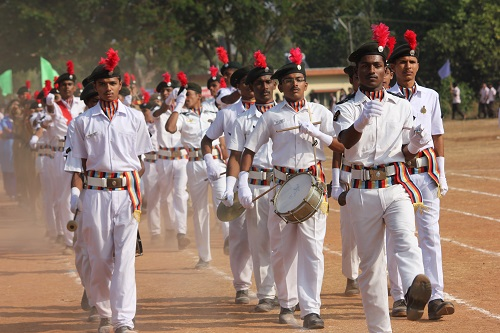
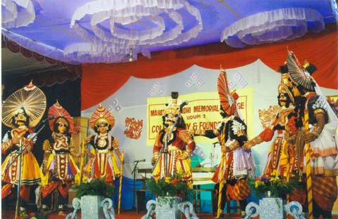

NCC & NSS

National Cadet Corps (NCC) at MGM College trains students in discipline, leadership, and national service. Many of our cadets have participated in national-level camps and parades.
National Service Scheme (NSS) engages students in community service, health camps, cleanliness drives, and social awareness programmes throughout the year.
Yakshagana Kendra

The Yakshagana Kendra at MGM is a cultural centre dedicated to preserving and promoting the traditional art form of Yakshagana — a classical dance-drama unique to coastal Karnataka.
Students receive training in costume, music, and performance from expert practitioners.